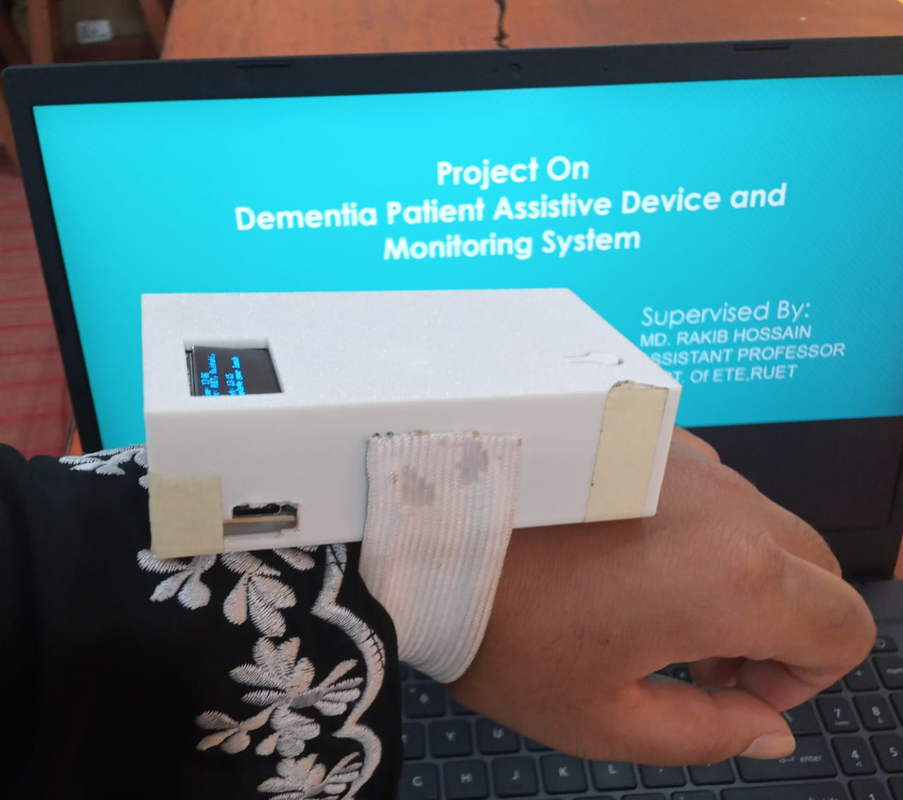
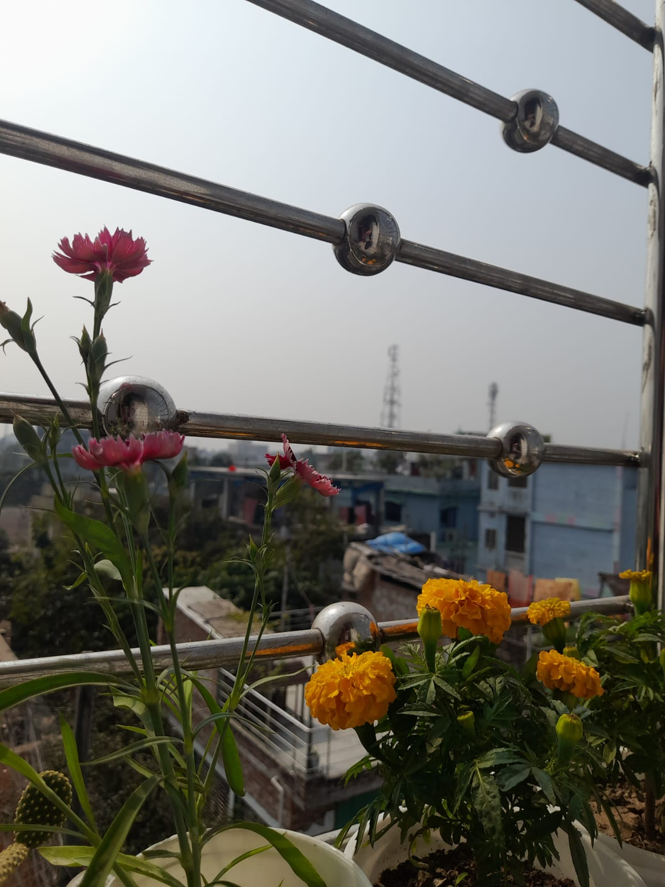
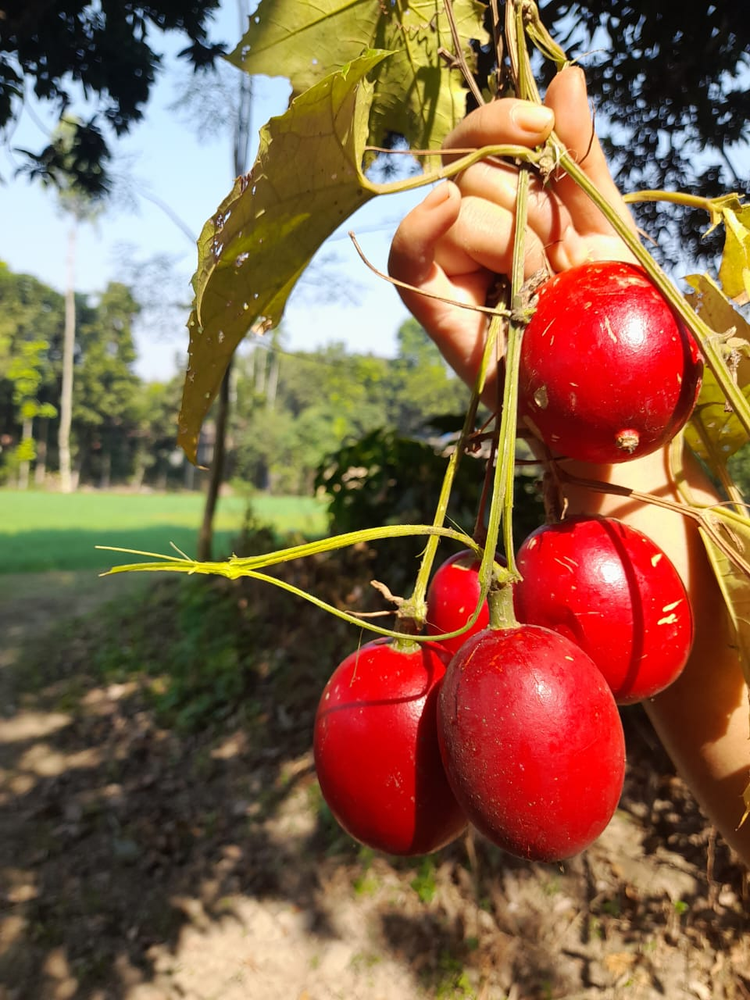
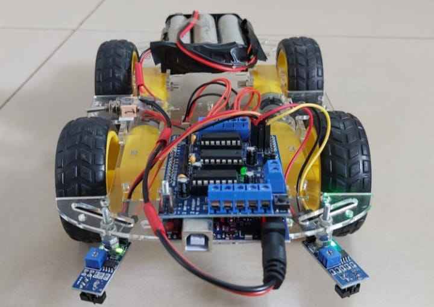
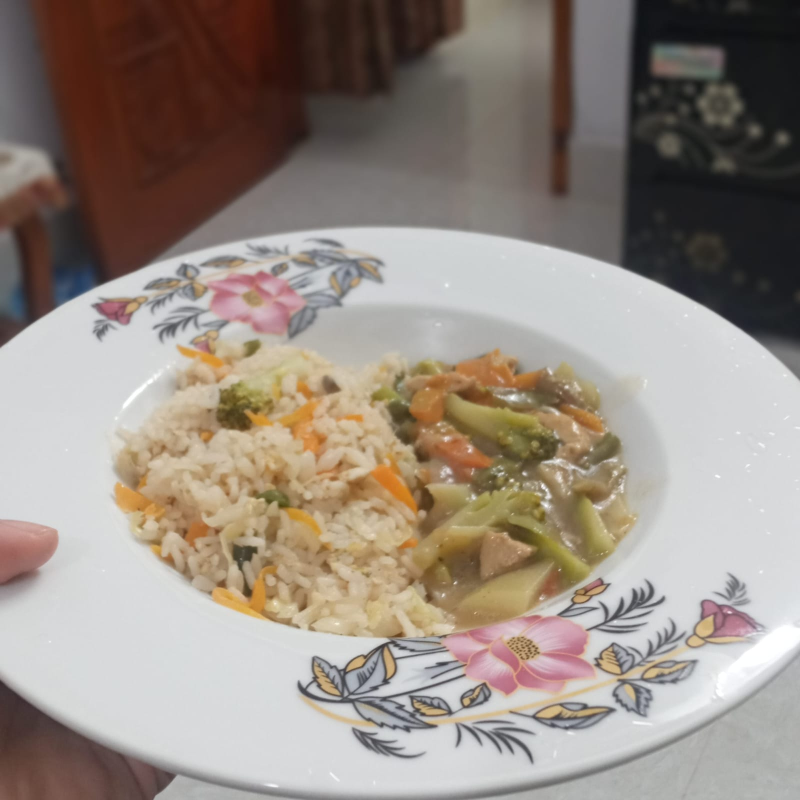
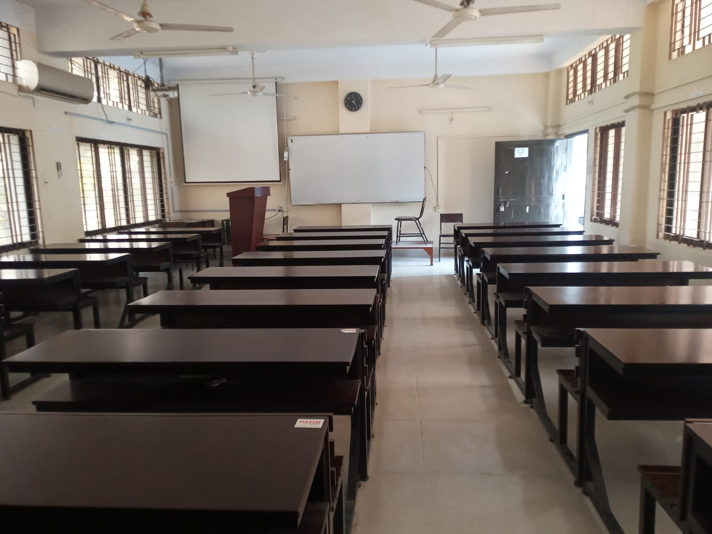

Projects & Experience
From assistive robotics to garden portraits — each project tells a story of curiosity, creativity, and dedication to craft.

Dementia Patient Assistive Device
A hardware-software integrated assistive device designed for dementia patients. The device helps patients with reminders, location tracking, and emergency alerts, reducing caregiver burden and improving patient safety. Developed as a 2nd semester project at RUET ETE Department. The system uses a microcontroller with sensors, a buzzer alert mechanism, and a simple LCD interface for caregivers.

Urban Balcony Garden — Green Living
A personal gardening initiative to cultivate a thriving balcony garden using recycled containers and organic soil. Grew over 15 varieties of herbs, flowers, and vegetables. Documented the entire growth cycle from seed to harvest through weekly photography, creating a visual journal of the garden's transformation through the seasons.

Petals & Light — Botanical Photography Series
A curated botanical photography series capturing the intricate beauty of garden flowers, leaves, and morning dew. Shot during golden hours to maximize natural lighting. Post-processed in Adobe Lightroom to enhance natural colors while maintaining realistic tones. A collection of over 50 photos that celebrate the quiet poetry of plant life.

Line Following Robot — Autonomous Navigation
Built and programmed a line-following robot using infrared sensors and an Arduino microcontroller. The robot autonomously follows a pre-drawn track using a PID control algorithm for smooth turning and speed regulation. Demonstrated at a university lab session and awarded for innovative sensor placement design.

Kitchen Herb Garden — Farm to Table
Designed and grew a functional kitchen herb garden featuring mint, coriander, basil, green onions, and chili peppers. Implemented a DIY drip irrigation system using recycled plastic bottles. Kept a detailed growth log tracking soil pH, watering intervals, and harvest yields over a 3-month period.

RUET Campus Life — Visual Diary
A photographic visual diary documenting student life at RUET — from early morning labs and project showcases to campus events and quiet study corners. Inspired by the belief that everyday campus moments deserve to be preserved. Published as a personal photo blog shared with classmates.
Have a Project in Mind?
I'm always eager to collaborate on innovative engineering projects, photography assignments, or creative storytelling work. Let's build something meaningful together.
✉️ Let's Collaborate